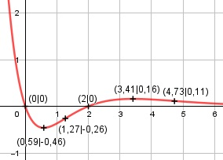

Aufgabe 149 f(x) = (x2 - 2x) * e-x Produktregel erste Ableitung: u = x2 - 2x, u' = 2x - 2 v = e-x Kettenregel: v' = -e-x f'(x) = (2x - 2) * e-x + (-e-x) * (x2 - 2x) f'(x) = e-x * (2x - 2 - x2 + 2x) f'(x) = e-x * (-x2 + 4x - 2) Produktregel zweite Ableitung: u = e-x Kettenregel: u' = -e-x v = - x2 + 4x - 2, v' = - 2x + 4 f''(x) = -e-x * (-x2 + 4x - 2) + (-2x + 4) * e-x f''(x) = e-x * (x2 - 4x + 2 - 2x + 4) x2 + 6x - 6 f''(x) = e-x * (x2 - 6x + 6) = --------------- ex Zur Beurteilung, ob f'''(x) ≠ 0: (Begründung siehe Aufgabe 105) u = x2 + 6x - 6, u' = 2x + 6 u' 2x + 6 f'''(x) = --- = -------- ≠ 0 für alle x ≠ -3 v ex Definitionsbereich: -∞ < x < ∞ Waagerechte Asymptote: x2 - 2x f(x) = (x2 - 2x) * e-x = --------- ex geht gegen 0 für x --> ∞ Wertebereich: f(x) wird dann am kleinsten, wenn x = 0,59 (Extrempunkt) f(0,59) = -0,46 --> -0,46 ≤ f(x) < ∞ Symmetrie zur y-Achse bzw. zum Punkt (0|0): f(-x) = ((-x)2 - 2(-x)) * e-(-x) f(-x) = (x2 + 2x) * ex ≠ f(x) --> keine Achsensymmetrie -f(-x) = -(x2 + 2x) * ex ≠ f(x) --> keine Punktsymmetrie Nullstellen: f(x) = 0 (x2 - 2x) * e-x = 0 |:e-x x2 - 2x = 0 x * (x - 2) = 0 x1 = 0 x - 2 = 0|+2 x2 = 2 N1(0|0), N2(2|0) Schnittpunkt mit der y-Achse: x = 0 f(0) = (02 - 2 * 0) * e-0 = 0 Sy(0|0) Extrempunkte: f'(x) = 0 e-x * (-x2 + 4x - 2) = 0 |:e-x -x2 + 4x - 2 = 0 |*(-1) x2 - 4x + 2 = 0 p, q – Formel p = -4, q = 2 x1,2 = x1,2 = 2 ± x1,2 = 2 ± x1,2 = 2 ± 1,41 x1 = 3,41 x2 = 0,59 x1 = 3,41 f(3,41) = (3,412 - 2 * 3,41) * e-3,41 = 0,16 x1 = 0,59 f(0,59) = (0,592 - 2 * 0,59) * e-0,59 = -0,46 f''(3,41) = e-3,41 * (3,412 - 6 * 3,41 + 6) < 0 --> Hochpunkt (3,41|0,16) f''(0,59) = e-0,59 * (0,592 - 6 * 0,59 + 6) > 0 --> Tiefpunkt (0,59|-0,46) Wendepunkte: f''(0) = 0 e-x * (x2 - 6x + 6) = 0 |:e-x x2 - 6x + 6 = 0 p, q – Formel p = -6, q = 6 x1,2 = x1,2 = 3 ± x1,2 = 3 ± x1,2 = 3 ± 1,73 x1 = 4,73 x2 = 1,27 x1 = 4,73 f(4,73) = (4,732 - 2 * 4,73) * e-4,73 = 0,11 --> WP1(4,73|0,11) x2 = 1,27 f(1,27) = (1,272 - 2 * 1,27) * e-1,27 = -0,26 --> WP2(1,27|-0,26) Graph:
